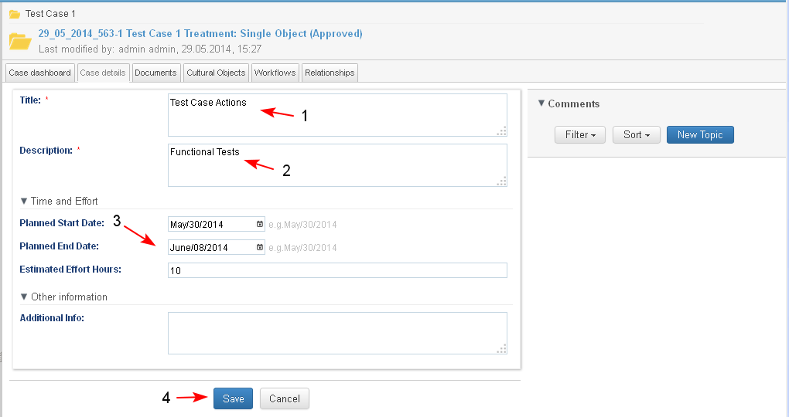

Users with corresponding permissions are able to edit the case metadata details.
Preconditions
- The details of the case may be edited only when the case is in an active state.
- The details of the case may be edited at a time only by one user.
- The user starts the action from:
- Personal dashboard/ My Cases dashlet/ Action ""Edit Case Details" for a chosen case
- Case Dashboard/ button Actions / "Edit Case Details" (1-2)
- Case Details page/ button Actions / "Edit Case Details"

- The system opens the screen with the editable metadata of the case. For this type of case editable are:Title, Description, Time and Effort data, Other Information.
The editable metadata is different for each type of case. It is possible no editable metadata to be available for some case types.

- The user edits the necessary details (1-2-3) and clicks "Save" (4).

- The system saves the edited case details (1-2-3-4).
- After each edit the following details of the case are updated automatically (3):
- Date and time of last update (4)
- Modified by/ Last Modified by - the user who modified the case last
- After each edit the following details of the case are updated automatically (3):

Note: Actions such as attachment of new documents, deletion of documents, starting workflows and discussions are carried out by users with corresponding permissions, when a case is opened in preview. After such actions the update of data in the case itself is automatic and no additional action is required.